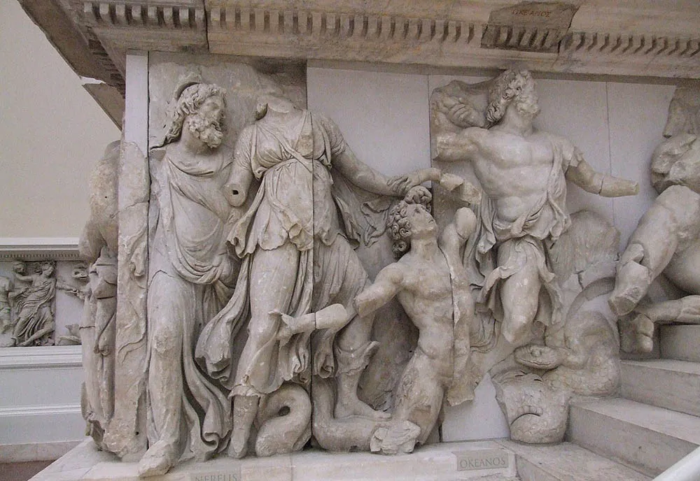

Trong giai đoạn sơ khai, điêu khắc Hy Lạp mang đậm tính chất tôn giáo. Các tác phẩm thường mô tả các vị thần với hình dáng đơn giản, cứng nhắc, thể hiện sự tôn kính đối với thần linh. Tuy nhiên, cùng với sự phát triển của các thành thị-nhà nước, đời sống tinh thần của người Hy Lạp ngày càng phong phú. Điều này đã tạo ra những thay đổi lớn trong nghệ thuật điêu khắc. Ở thời kỳ cổ điển, điêu khắc đạt đến đỉnh cao với những tác phẩm hoàn hảo về hình thể, thể hiện vẻ đẹp lý tưởng của con người. Các nghệ sĩ Hy Lạp đã thành công trong việc bắt trọn những khoảnh khắc chuyển động, biểu cảm của con người, tạo ra những tác phẩm sống động và giàu cảm xúc.
NGHỆ THUẬT ĐIÊU KHẮC HI LẠP CỔ ĐẠI
Sự phát triển của nghệ thuật điêu khắc Hy Lạp cổ đại dưới góc nhìn lịch sử biện chứng.
Nghệ thuật điêu khắc Hy Lạp cổ đại, với những tác phẩm điêu luyện và tinh xảo, đã để lại dấu ấn sâu đậm trong lịch sử nhân loại. Dưới góc nhìn lịch sử biện chứng, nghệ thuật điêu khắc Hy Lạp cổ đại không đơn thuần là sự sáng tạo của các nghệ nhân tài ba mà còn là sản phẩm của quá trình đấu tranh, phát triển và biến đổi không ngừng của xã hội Hy Lạp.

Sự phát triển của nghệ thuật điêu khắc Hy Lạp cổ đại dưới góc nhìn lịch sử biện chứng.
Sự phát triển của điêu khắc Hy Lạp cổ đại không thể tách rời khỏi những biến động của xã hội. Các cuộc chiến tranh, sự cạnh tranh giữa các thành bang, sự thay đổi trong quan niệm về con người đã tác động sâu sắc đến nội dung và hình thức của các tác phẩm điêu khắc. Ví dụ, sau chiến tranh Ba Tư, khi Athens trở thành trung tâm văn hóa của Hy Lạp, nghệ thuật điêu khắc ở đây đã đạt đến đỉnh cao, thể hiện tinh thần tự hào dân tộc và lý tưởng dân chủ.
Sự phát triển của nghệ thuật điêu khắc Hy Lạp cổ đại dưới góc nhìn lịch sử biện chứng.
Mâu thuẫn giữa các giai cấp trong xã hội Hy Lạp, giữa truyền thống và đổi mới trong nghệ thuật đã tạo ra động lực phát triển. Sự ra đời của những tư tưởng triết học mới, những phát hiện khoa học đã làm thay đổi quan niệm về con người và thế giới, từ đó tác động đến nghệ thuật điêu khắc.
Nhìn chung, nghệ thuật điêu khắc Hy Lạp cổ đại đã trải qua một quá trình phát triển lâu dài và phức tạp. Từ những tác phẩm đơn giản, thô sơ ban đầu, điêu khắc Hy Lạp đã đạt đến đỉnh cao của sự hoàn hảo và trở thành một nguồn cảm hứng bất tận cho các thế hệ nghệ sĩ sau này. Việc áp dụng góc nhìn lịch sử biện chứng giúp chúng ta hiểu rõ hơn về quá trình hình thành và phát triển của loại hình nghệ thuật này, đồng thời khám phá ra những giá trị nhân văn sâu sắc ẩn chứa trong từng tác phẩm.
Nghệ thuật điêu khắc Hy Lạp cổ đại không chỉ là một di sản văn hóa quý báu mà còn là một minh chứng sinh động cho sự phát triển của tư duy và xã hội loài người. Bằng việc áp dụng phương pháp lịch sử biện chứng, chúng ta có thể khám phá ra những quy luật vận động khách quan của nghệ thuật và tìm thấy những bài học quý giá cho quá trình sáng tạo nghệ thuật hiện đại.